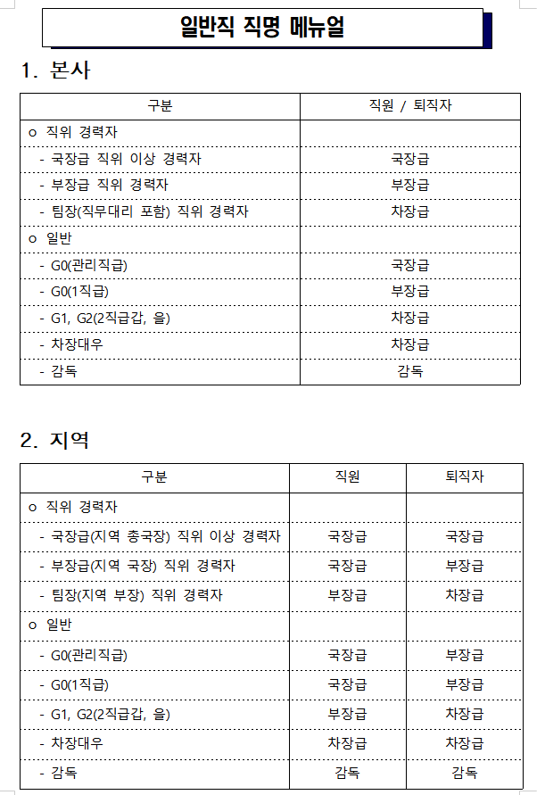

신청자: 필요 서류 확인 (경력확인서 or 경력증명서)
경력확인서: KBS 인프라기획부 / 담당자: 오종원(02-781-5162)- 정보통신공사협회, 전기공사협회, 기술사, 엔지니어링협회 등
경력증명서: KBS 인사운영부 / 담당자: 안미현(02-781-1411)
신청자: 경력확인서 작성 후 KBS인프라기획부 송부
1. 작성하고자 하는 협회 양식 다운로드2. 작성 후 KBS 인프라기획부 송부
KBS인프라기획부: 경력확인서 검토 및 직인 입력
1. 경력확인서 검토 후 담당자 직인 입력
2. 인사운영부 검토 요청
KBS인사운영부: 경력확인서 검토 및 직인 입력
1. 경력확인서 검토 후 담당자 직인 입력
2. 인프라기획부 회신
KBS총무부: 공사 직인 행정
1. 인프라기획부 직인 결재 상신
2. 총무부에서 공사 직인 수행
KBS인프라기획부: 최종 확인 후 신청자 회신
1. 메뉴얼
경력확인서 초안을 직접 작성해야 하는 신청자를 위한 상세 메뉴얼입니다.
1.1 사전 확인사항
- 경력 유형 확인: 유지관리 / 공사감독만 인정 (모든 다른 업무 적용 불가)
- 용도 확인: 정보통신공사협회, 전기공사협회, 엔지니어링협회 등 목적 명확히 할 것
- 인사 정보 확인
- ESS 시스템의 발령 정보 기반으로 작성
- 필요시 인사운영부 발급된 '경력증명서' 참조
1.2 작성 항목별 가이드
- 근무기간/부서:
- 전보, 파견 등 변동이 있다면 각각 구분 작성
- 직제개편 시 전보, 승진 시점의 최종부서 명칭을 모두 기입
- 부서명은 ESS 기준 공식 명칭 사용(송신소 근무 경력이 공식직제에 없을 경우 미인정)
- 지역근무는 유지관리만 인정(신청자 기안의 KOBIS 사업시행 문서 있는경우 제외)
- 직급/직위: 승진·승격·전보 등 변동 시마다 기간 나눠 작성
- 승진·승격·전보 등 인사 이력 발생 시 기간을 분리해 작성
- G2 이상은 ‘차장급’, G0 1직급은 ‘부장급’ 등
- 팀장, 부장, 국장, 소장급, 본부장 업무 후 : 각각 차장ㅎ급, 부장급, 국장급, 소장급, 본부장급 적용
- 지역 차장대우시 차장급 기재
- 퇴직 후 재고용자는 ‘사원’으로 작성, 재계약시 근무기간 별도 구분
- 휴직기간 근무기간 제외
- 지역근무는 유지관리 만 인정(신청자 기안의 KOBIS 사업시행 문서 있는경우 제외)
- 담당업무:
- 유지관리: 방송시설 유지보수 (운용 제외)
- 공사감독: 구체적인 사업명 및 공사기간 명치, 코비스 상신 증빙 필요
- 동일 부서에서 유지관리와 공사감독이 혼재된 경우, 기간을 구분하여 작성
- 참여사업명: 유지관리는 "방송시설 유지관리", 공사감독은 해당 사업명 기입(코비스 증빙 필수)
1.3 자격별 예외 사항
- 정보통신기술자 자격 보유 시 설계 업무 인정 가능 (코비스 증빙 필수)
- 감리업무는 외부 감리원만 인정 (내부 지정 불가)
- 전기 관련 경력은 전력운영부 확인 필요, 송신소 근무만 인정
1.5 직급 명시 기준 (요약)
- 본사 기준: G2 → 차장급, G0(1직급) → 부장급
- 지역 기준: G2 → 부장급, G0(1직급) → 국장급
- 퇴직자 재고용: 사원, 재계약 시 근무기간 별도 구분
※ 자세한 기준은 "일반직 직명 매뉴얼" 참조

1.6 유의사항 정리
- ESS 기준 부서명/직급 준수
- 동일 부서 내 유지관리·공사감독 혼재 시 기간 나눠 작성
- 노조, 감사, 공통직군, 인정되지 않음
- 퇴직자·연봉직은 사번 통보 필수
- 경력확인서 발급에는 여러 절차가 있어 최소 1주일 시간 소요, 여유있는 신청 필요
- 대한기계설비건설협회의 작성시 송신소 및 중계소의 주소를 명확히 작성할 필요가 있음
예시 자료
본사/지역 탭을 선택하면 해당 예시의 경력사항과 경력확인서가 좌우로 표시됩니다.
경력사항
| 일자 | 구분 | 직급 | 소속/내용 |
|---|
※ 지역 경력사항은 예시를 위한 가상 데이터입니다.
| 일자 | 구분 | 직급 | 소속/내용 |
|---|---|---|---|
| 1994/03/04 | 신규 | 수습4급 | 신입사원 입사 |
| 1994/05/04 | 전보 | 수습4급 | 청주방송총국 |
| 1994/05/11 | 전보 | 수습4급 | 청주방송총국 대암산송신소 |
| 1994/09/04 | 수습해제 | 일반직4직급 | 청주 방송총국 대암산송신소 |
| 1997/12/28 | 전보 | 일반직4직급 | 대전방송총국 기술국 TV기술부 |
| 2000/09/04 | 승진 | 일반직3직급 | 일반직4직급 → 일반직3직급 |
| 2001/01/04 | 직제개편 | 일반직3직급 | 대전방송총국 기술국 제작기술부 |
| 2002/04/18 | 전보 | 일반직3직급 | 라디오기술국 (라디오기술3) |
| 2002/06/20 | 직제개편 | 일반직3직급 | 라디오기술국 |
| 2005/10/12 | 전보 | 일반직3직급 | TV제작본부 TV제작기술팀 |
| 2006/06/14 | 직제개편 | 일반직3직급 | TV제작본부 예능기술팀 |
| 2006/09/04 | 승진 | 일반직2직급을 | 일반직3직급 → 일반직2직급을 |
| 2007/01/04 | 전보 | 일반직2직급을 | 기술본부 네트워크팀 |
| 2009/09/04 | 승진 | 일반직2직급갑 | 일반직2직급을 → 일반직2직급갑 |
| 2011/06/14 | 전보 | 일반직2직급갑 | TV제작본부 TV기술국 |
| 2011/12/14 | 직제개편 | 일반직2직급갑 | 제작리소스센터 TV기술국 |
| 2012/03/04 | 직제개편 | 일반직2직급갑 | 기술본부 방송시설국 제작송신시설팀 |
| 2012/09/04 | 승격 | 일반직2직급갑 | 뉴미디어·테크놀로지본부 방송시설국 제작시설부 팀장 |
| 2013/09/04 | 승격 | 일반직2직급갑 | 기술본부 방송시설국 제작시설부장 |
| 2014/10/14 | 전보 | 일반직2직급갑 | 기술본부 네트워크관리국 화성송신소장 |
| 2016/10/14 | 전보 | 일반직2직급갑 | 미래사업본부 인프라투자국 시스템구축부장 |
| 2017/05/26 | 전보 | 일반직2직급갑 | 제작기술본부 송출국 R송출부 |
| 2018/12/05 | 직제개편 | 일반직2직급갑 | 기술본부 제작기술센터 라디오기술국 |
| 2019/06/20 | 전보 | 일반직2직급갑 | 제작기술본부 TV기술국 |
| 2020/02/04 | 승격 | 일반직2직급갑 | 기술본부 미디어인프라국장 |
| 2021/03/04 | 직급명칭변경 | 일반직G1직급 | 일반직2직급갑→일반직G1직급 |
| 2021/03/04 | 기타발령 | 일반직M1직급 | 일반직G1직급→일반직M1직급 |
| 2021/03/04 | 호봉제전환 | 일반직M1직급 | 호봉제 전환 |
| 2024/03/04 | 전보 | 일반직G1직급 | 전략기획실 전략기획국 전략개발부 |
| 2024/03/04 | 파견 | 일반직G1직급 | 한국지상파UHD방송협회 (사무총장) 파견 |
| 2024/03/04 | 파견해제 | 일반직G1직급 | 파견해제 |
| 2024/03/04 | 전보 | 일반직G1직급 | 기술본부 방송네트워크국 |
| 2034/03/04 | 퇴직 | 일반직G1직급 | 인사규정 제42조(정년)에 의거 퇴직 |
| 퇴직 후 재고용 (연봉계약직) | |||
| 2034/06/04 | 재고용계약 | 사원 | 송신플랫폼국 화성송신소 |
| 2034/10/04 | 전보계약 | 사원 | 기술본부 UHD자문위원회 기술자문 |
| 2035/11/04 | 퇴직 | 사원 | 계약기간 만료, 퇴직 처리 |
※ 본 경력사항은 예시를 위한 가상 데이터입니다.
경력확인서
| No. | 근무기간 | 소속부서 | 직위/직급 | 담당업무 |
|---|
※ 지역 경력확인서는 예시를 위한 가상 데이터입니다.
| No. | 근무기간 | 소속부서 | 직위/직급 | 담당업무 |
|---|---|---|---|---|
| 1 | 1994.03.04. ~ 1997.12.27. | 청주방송총국 대암산송신소 | 직원 | 방송시설 유지관리 |
| 2 | 1997.12.28. ~ 2002.04.17. | 대전방송총국 기술국 제작기술부 | 직원 | 방송시설 유지관리 |
| 3 | 2002.04.18. ~ 2005.10.11. | 라디오기술국 | 직원 | 방송시설 유지관리 |
| 4 | 2005.10.12. ~ 2006.09.03. | TV제작본부 예능기술팀 | 직원 | 방송시설 유지관리 |
| 5 | 2006.09.04. ~ 2007.01.03. | TV제작본부 예능기술팀 | 차장급 | 방송시설 유지관리 |
| 6 | 2007.01.04. ~ 2011.06.13. | 기술본부 네트워크팀 | 차장급 | 방송시설 유지관리 |
| 7 | 2011.06.14. ~ 2012.09.03. | 기술본부 방송시설국 제작송신시설팀 | 차장급 | 방송시설 공사감독(제3UHD채널 다중화 사업) |
| 8 | 2012.09.04. ~ 2013.09.03. | 뉴미디어·테크놀로지본부 방송시설국 제작시설부 | 팀장 | 방송시설 공사감독(KBS DTV 1차 송신시설 구축사업) |
| 9 | 2013.09.04. ~ 2014.10.13. | 기술본부 방송시설국 제작시설부장 | 부장 | 방송시설 유지관리 총괄 |
| 10 | 2014.10.14. ~ 2016.10.13. | 기술본부 네트워크관리국 화성송신소장 | 소장 | 방송시설 유지관리 총괄 |
| 11 | 2016.10.14. ~ 2017.05.25. | 미래사업본부 인프라투자국 시스템구축부 | 부장 | 방송시설 유지관리 총괄 |
| 12 | 2017.05.26. ~ 2019.06.19. | 기술본부 제작기술센터 라디오기술국 | 부장급 | 방송시설 유지관리 |
| 13 | 2019.06.20. ~ 2020.02.03. | 제작기술본부 TV기술국 | 부장급 | 방송시설 유지관리 |
| 14 | 2020.02.04. ~ 2024.03.03. | 기술본부 미디어인프라국장 | 국장 | 방송시설 유지관리 |
| 15 | 2024.03.04. ~ 2034.03.03. | 기술본부 방송네트워크국 | 국장급 | 방송시설 유지관리 |
| 16 | 2034.06.04. ~ 2035.11.03. | 송신플랫폼국 화성송신소 | 사원 | 방송시설 유지관리 |
※ 본 경력확인서는 예시를 위한 가상 데이터입니다.